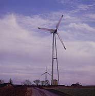

Wind
Turbine Towers
Photograph
© 1999 Soren Krohn
The tower of the wind turbine carries the nacelle and the
rotor.
 Towers for large wind turbines may be either
tubular steel towers, lattice towers, or concrete towers. Guyed
tubular towers are only used for small wind turbines (battery
chargers etc.)
Towers for large wind turbines may be either
tubular steel towers, lattice towers, or concrete towers. Guyed
tubular towers are only used for small wind turbines (battery
chargers etc.)
Tubular
Steel Towers
 Most
large wind turbines are delivered with tubular steel towers,
which are manufactured in sections of 20-30 metres with flanges
at either end, and bolted together on the site. The towers are
conical (i.e. with their diameter increasing towards the base)
in order to increase their strength and to save materials at
the same time.
Most
large wind turbines are delivered with tubular steel towers,
which are manufactured in sections of 20-30 metres with flanges
at either end, and bolted together on the site. The towers are
conical (i.e. with their diameter increasing towards the base)
in order to increase their strength and to save materials at
the same time.
Photograph © NEG-Micon A/S 1998
Lattice
Towers

 Lattice towers are
manufactured using welded steel profiles. The basic advantage
of lattice towers is cost, since a lattice tower requires only
half as much material as a freely standing tubular tower with
a similar stiffness. The basic disadvantage of lattice towers
is their visual appearance, (although
that issue is clearly debatable). Be that as it may, for aesthetic
reasons lattice towers have almost disappeared from use for large,
modern wind turbines.
Lattice towers are
manufactured using welded steel profiles. The basic advantage
of lattice towers is cost, since a lattice tower requires only
half as much material as a freely standing tubular tower with
a similar stiffness. The basic disadvantage of lattice towers
is their visual appearance, (although
that issue is clearly debatable). Be that as it may, for aesthetic
reasons lattice towers have almost disappeared from use for large,
modern wind turbines.
Photograph © Nordex A/S 1998
Guyed
Pole Towers

 Many
small wind turbines are built with narrow pole towers supported
by guy wires. The advantage is weight savings, and thus cost.
The disadvantages are difficult access around the towers which
make them less suitable in farm areas. Finally, this type of
tower is more prone to vandalism, thus compromising overall safety.
Many
small wind turbines are built with narrow pole towers supported
by guy wires. The advantage is weight savings, and thus cost.
The disadvantages are difficult access around the towers which
make them less suitable in farm areas. Finally, this type of
tower is more prone to vandalism, thus compromising overall safety.
Photograph © Soren Krohn 1999
Hybrid
Tower Solutions
 Some towers are made
in different combinations of the techniques mentioned above.
One example is the three-legged Bonus 95 kW tower which you see
in the photograph, which may be said to be a hybrid between a
lattice tower and a guyed tower.
Some towers are made
in different combinations of the techniques mentioned above.
One example is the three-legged Bonus 95 kW tower which you see
in the photograph, which may be said to be a hybrid between a
lattice tower and a guyed tower.
Photograph © Bonus Energy A/S 1998
Cost
Considerations
The price of a tower for a wind turbine is generally around 20
per cent of the total price of the turbine. For a tower around
50 metres' height, the additional cost of another 10 metres of
tower is about 15,000 USD. It is therefore quite important for
the final cost of energy to build towers as optimally as possible.
 Lattice towers are the cheapest to manufacture,
since they typically require about half the amount of steel used
for a tubular steel tower.
Lattice towers are the cheapest to manufacture,
since they typically require about half the amount of steel used
for a tubular steel tower.
Aerodynamic
Considerations
Generally, it is an advantage to have a tall tower in areas with
high terrain roughness, since the wind speeds increases farther
away from the ground, as we learned on the page about wind
shear.
 Lattice towers and guyed pole towers have
the advantage of giving less wind shade than a massive tower.
Lattice towers and guyed pole towers have
the advantage of giving less wind shade than a massive tower.
Structural
Dynamic Considerations
The rotor blades on turbines with relatively short
towers will be subject to very different wind speeds (and thus
different bending) when a rotor blade is in its top and in its
bottom position, which will increase the fatigue
loads on the turbine.
Choosing
Between Low and Tall Towers
Obviously, you get more energy from a larger wind turbine than
a small one, but if you take a look at the three wind turbines
below, which are 225 kW, 600 kW, and 1,500 kW respectively, and
with rotor diameters of 27, 43, and 60 metres, you will notice
that the tower heights are different as well.


Clearly, we cannot sensibly fit a 60 metre rotor to a tower of less than 30 metres. But if we consider the cost of a large rotor and a large generator and gearbox, it would surely be a waste to put it on a small tower, because we get much higher wind speeds and thus more energy with a tall tower. (See the section on wind resources). Each metre of tower height costs money, of course, so the optimum height of the tower is a function of
- tower costs per metre (10 metre extra tower will presently cost you about 15,000 USD)
- how much the wind locally varies with the height above ground level, i.e. the average local terrain roughness (large roughness makes it more useful with a taller tower),
- the price the turbine owner gets for an additional kilowatt hour of electricity.
Manufacturers often deliver machines where the tower height is equal to the rotor diameter. aesthetically, many people find that turbines are more pleasant to look at, if the tower height is roughly equal to the rotor diameter.
Occupational
Safety Considerations
The choice of tower type has consequences for occupational safety:
This is discussed in detail on the page on Wind
Turbines and Occupational Safety.

|
Back | Home
| Forward |
© Copyright 2000 Soren Krohn.
All rights reserved.
Updated 9 September 2000
http://www.windpower.org/tour/wtrb/tower.htm